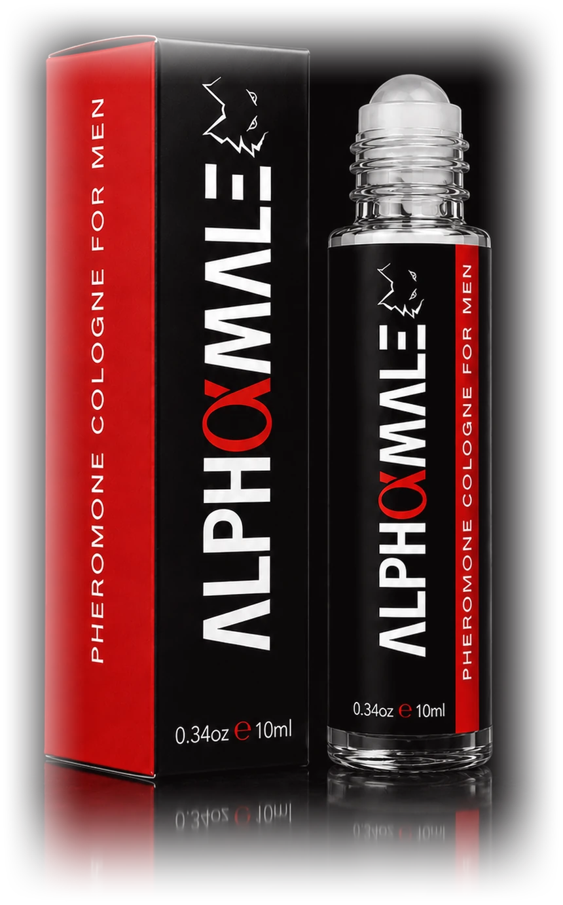

Smelling good is expected. Being remembered isn’t.
A masculine pheromone cologne created for the moments that matter — first impressions, closer conversations, and the confidence to see where things go.

So what makes Alpha Male different?
Premium fragrance+Pheromones+Roll-on application
- 01
Smell unforgettable
A sophisticated masculine fragrance designed to smell refined, confident and unmistakably masculine — from the first impression to the last.
- 02
Turn up your natural appeal
Pheromone-infused to complement what you already bring — your presence, your confidence, your chemistry.
- 03
Made for closer
Roll it directly onto your pulse points, keeping the fragrance close to your skin — right where personal space starts disappearing.
The scent
What does confidence smell like?
- Opening — the first impressionBergamot + PepperFresh. Sharp. Immediately noticeable.
- Heart — the attractionLavender + Vetiver + PatchouliWarm. Masculine. Sophisticated.
- Base — what lingersAmbroxan + Cedar + LabdanumDeep. Smooth. Hard to forget.
- Roll it onA few smooth passes across your pulse points are all it takes.
- Hit the right spotsWrists. Neck. Behind the ears. Where warmth helps your scent come alive.
- Go make an impressionWalk out smelling sharp, feeling confident, and ready to be remembered.
Verified buyers
They bought it.
Then things got interesting.
The attention. The compliments. The unexpected reactions. Don’t take our word for it — read theirs.
Its very effective and it works
I see a lot of reviews on how it feels on your skin, how it feels, how it smells, and so on and so on. Get to the point on how effective it is. My truth is, it works, I stepped out several times in different occasions and I got more attention than expected. Each time, everytime it worked. I showered, I put on a little whiskey reserve lotion and added this around my neck and dapped a little on my chest and the attention lit up.. it works guys..
Apply some and let it make contact to the skin to unleash pheromones
At first I didn't like it because I only smelled it directly from the roller (it was too much at once) but then I applied it to the skin and BOOM amazing smell!! I've only been wearing it for about a week and have gotten some compliments but most importantly I love the smell personally guess that's all that truly matters
She's going to be all over you
Oh my gosh the sent of this d the first time I can say I would love to see what the women's going to say to me
May I add if your not a man who can get down with a type of fruity or sweet smell then it's not for you but if you ware million or anything light you will love this
Will be getting another one (in my DJ KAL voice)
Rico con excelente fijador
Tiene un olor suave pero muy bueno. Me gusta ya que es de aceite y se concentra donde lo colocas. Tiene feromonas y a mi esposa me encanta.
Works well
Always a great scent to allow my charm to shine a little bit more
She loves the scent
She loves the scent when I wear it. It lasts quite a while. It is very versatile and rolls on easily. It is effective and makes me feel much more confident when I wear it.
Long-lasting, masculine scent that boosts confidence
Really impressed with this cologne. It has a strong, masculine scent that lasts for hours without being overwhelming. The roll-on format is super convenient for travel. It definitely adds confidence and presence. Great quality.
Lady’s love this stuff
This is certainly effective… my girl can’t keep her head off my chest. She knows somethings up, just not exactly what! Lol…
The Alpha Male promise
Not feeling it?We can handle rejection.
If Alpha Male isn’t for you — for any reason — just tell us.
We’ll happily refund your purchase.
No convincing. No awkward conversation. No hard feelings.
- Don’t love it.Any reason
- Tell us.No hassle
- Get refunded.No hard feelings
You’ve read enough.
Now see what happens.
Alpha Male was made for the nights you want to show up confident, smell unforgettable, and leave an impression. Choose your bottle and make your move.
- 365-dayMoney-back guarantee
- SecureCheckout
- FastShipping
- SatisfactionGuaranteed
Join 10,000+ men who chose confidence.
Questions? Contact our support team. We’re here for you.